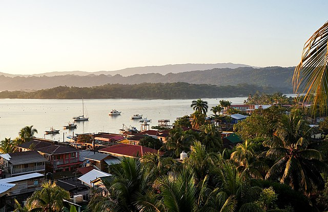
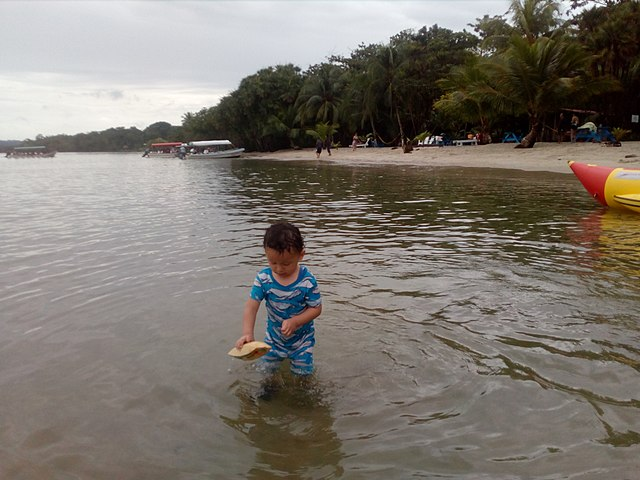
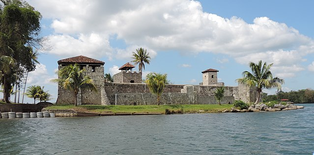
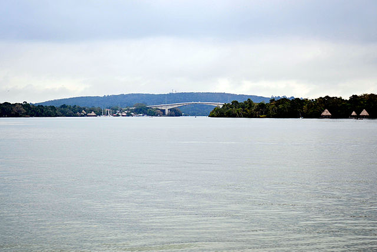

Conoce los lugares turísticos de Izabal, es un destino que cuenta con playas de arena blanca hasta parques ecológicos. Se caracteriza por su historia y carisma en el caribe. Además, estos son destinos imperdibles debido a su gran belleza natural. Para el próximo viaje a Izabal ya tienes opciones de lugares a los que puedes ir. ¡Sale viaje!
Playa Blanca
Para llegar a esta playa debe de ser por medio de lancha llegando ya sea desde Livingston o Río Dulce. Esta es un área privada y protegida en donde no existen construcciones ya que se quiere mantener la playa intacta como una reserva natural. 
Castillo de San Feipe
Este castillo cuenta con una historia increíble. En la antigüedad las bodegas alrededor del Castillo de San Felipe, ubicado en Izabal, funcionaron como un centro de intercambio comercial entre España y Guatemala. 
Parque Nacional Río Dulce
Río Dulce es la conexión entre el Lago de Izabal con el Mar Caribe en donde existe una importante reserva natural que cuida a muchísimas especies de flora y de fauna. 
¡Venga y disfrute de la experiencia caribeña!